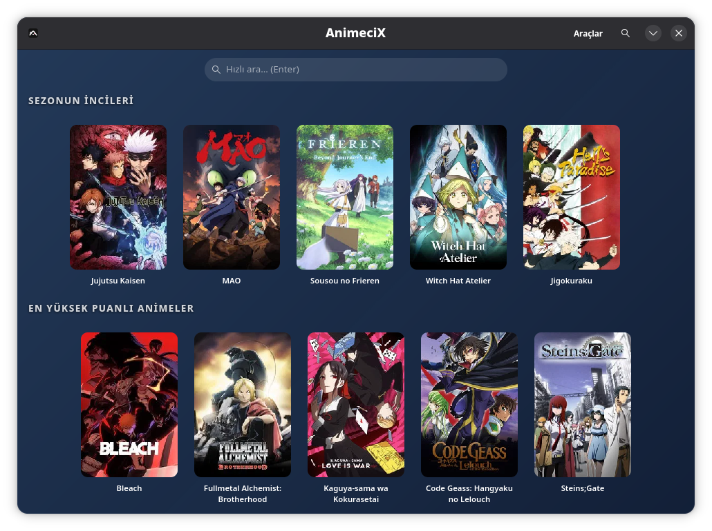
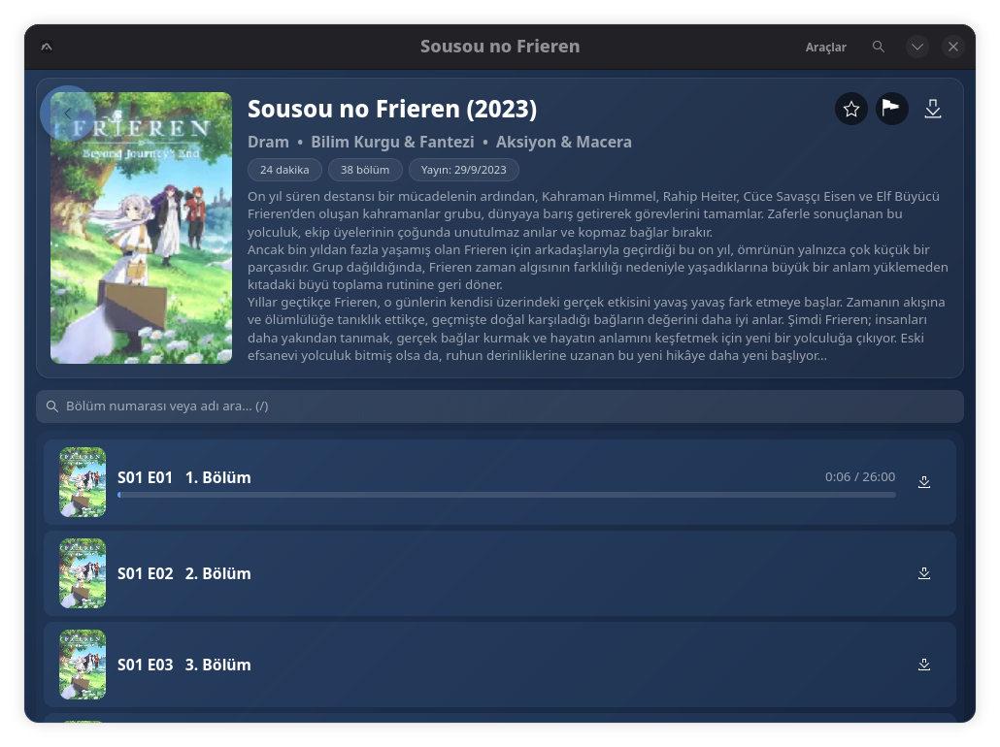
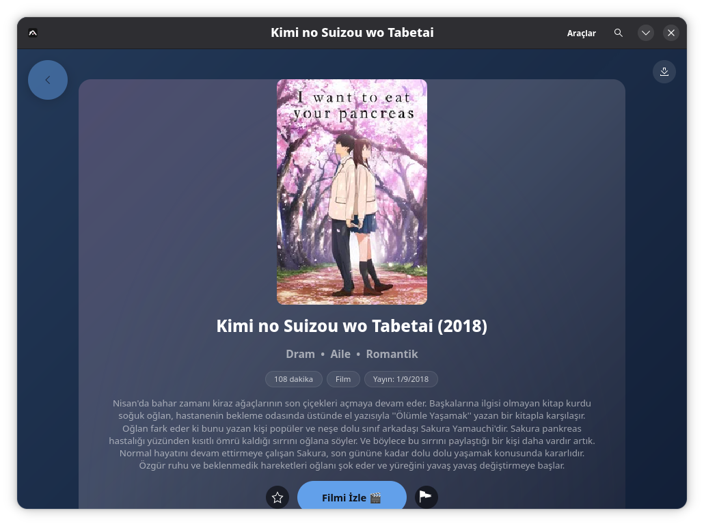
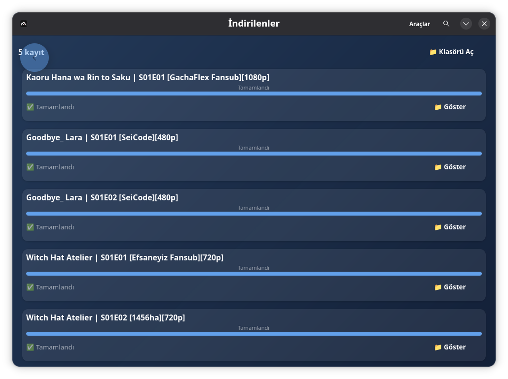
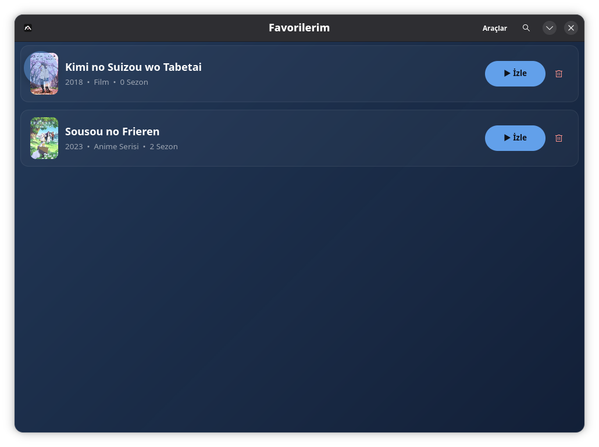
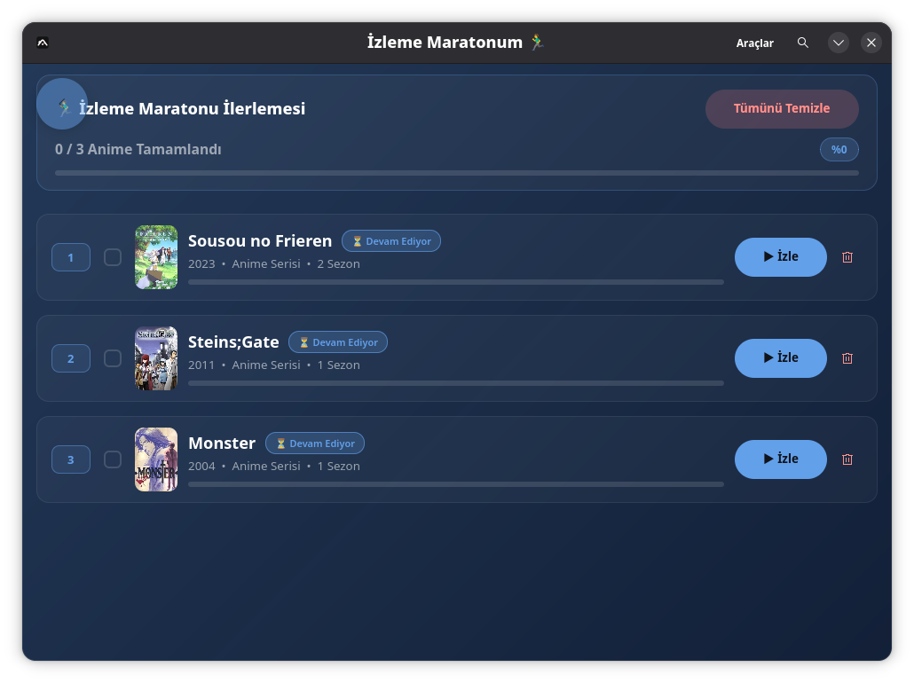
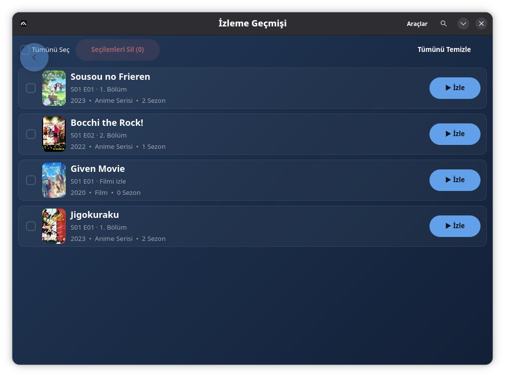
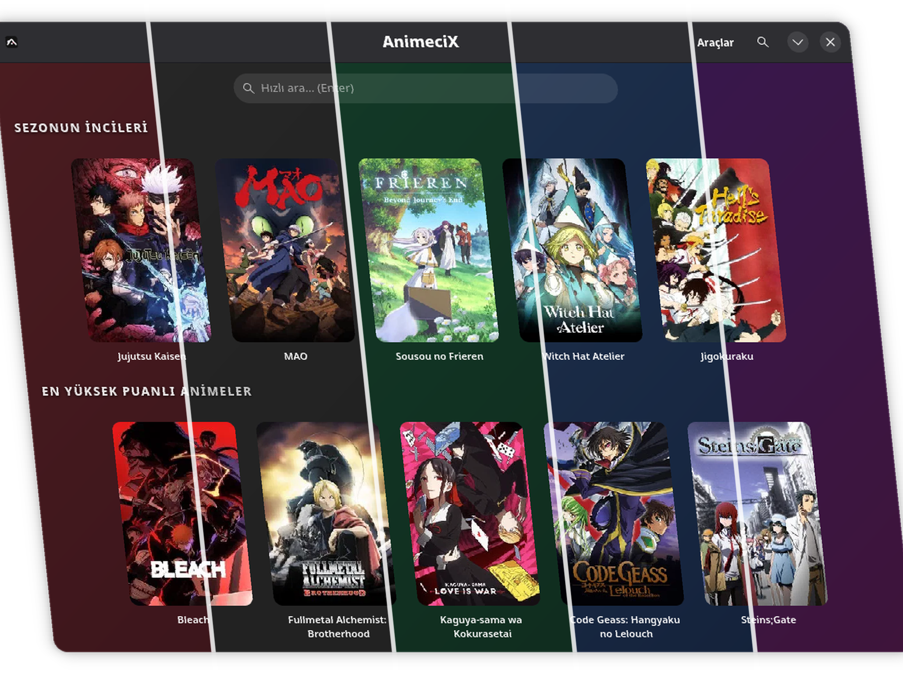
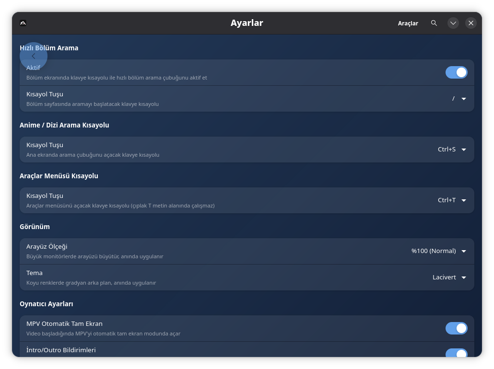

Home
Categorized lists for anime, series and movies. Centered pill search bar (Ctrl+S), a ‹ Back button in the header and a Pages menu on Ctrl+T. Click for details.
A desktop client for anime, series and movies on Linux. Built with GTK4/libadwaita, distributed as a single AppImage.
Features

Categorized lists for anime, series and movies. Centered pill search bar (Ctrl+S), a ‹ Back button in the header and a Pages menu on Ctrl+T. Click for details.

MPV-based player. Skips intros/outros using official data (S/E, no third-party service). The playing song shows top-right, open it in a browser with Shift+M. Optional per-episode quality picker. Anime4K upscaling, auto fullscreen.

Movies get their own page: one click to play, one click to download. All sources resolve in parallel and the best one wins. Dead sources are filtered; failures fall through to the next one.

Episode and movie download manager: fast multi-connection downloads, resume where you left off, batch download wizard. The queue runs in order with live per-row progress.

Star the titles you like. All favorites in a single list, with poster and the last episode watched.

Your watch-list. Drag-and-drop to reorder, per-episode progress bar. One click to resume the next episode.

Watched episodes are saved automatically. Pick up where you left off, or reopen an old episode.

Dark, Claret, Forest, Navy, Purple. Try them live on the welcome screen, switch with one click. Episode rows take on the theme color.

Themes, shortcuts (search, Pages menu), playback quality picker, download folder, desktop launcher setup, data reset and update checks. All on one screen.
Install
Single file, portable, no install required.
wget https://github.com/veilzon/animecix-linux/releases/latest/download/AnimeciX-x86_64.AppImage
chmod +x AnimeciX-x86_64.AppImage
./AnimeciX-x86_64.AppImageOpen the app, then Settings → "Install to desktop" to add a .desktop file and app icon. Distribution is currently AppImage-only.
sudo dnf install gtk4 libadwaita mpv
sudo apt install libgtk-4-1 libadwaita-1-0 mpv
sudo pacman -S gtk4 libadwaita mpv
The app checks for new versions on each launch. The AppImage build can self-update.
FAQ